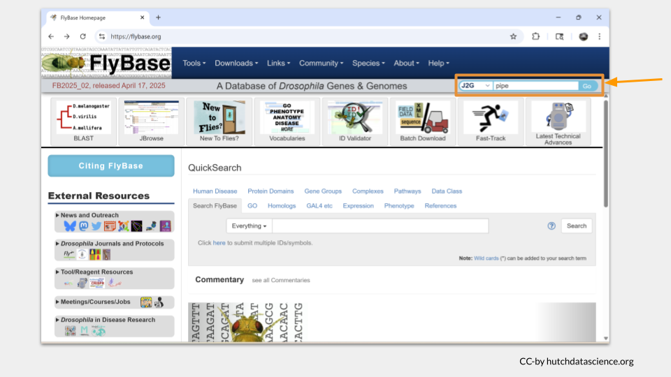
Using Public Genomic Databases - Student Guide
You are a genetic detective! Your lab group has been running experiments for a variety of Drosophila genes. Unfortunately, there was an accident with a broken pipe and the computer, and all the stored data is gone! You have copies of the experimental results, but you haven’t been able to find the key that tells you which set of experiments corresponds to which gene. Your job is to find the background information on each gene using online databases, then match the fruit fly gene to the correct set of experimental results.
The suspected genes
Each mystery experiment is associated with one of four Drosophila genes: scarlet, plum, mustard, and white.
Each of these genes has been characterized in the Drosophila genome and you know their common name, but not much else. You’ll need to figure out where they’re located in the Drosophila genome, in what tissues they’re expressed, and what species share homologous genes. Finally, you’ll need to track down what possible human diseases their human homologs might be involved in.
The databases
For this activity, you’ll explore a variety of curated genomic databases. Many of these databases are available to the public at little or no cost and are supported by grants to the researchers and organizations that maintain them.
Curated databases are simply databases where information is screened, validated, and organized by experts to ensure the data are accurate and reliable. Information has undergone rigorous quality control checks and includes sources and contextual information to help users understand the data. The data is generally standardized and organized in a way to be easily accessible and searchable.
It’s important to remember that the databases in this activity aren’t the only databases that exist! There are many more databases out there, each with its own focus. Luckily, most databases are organized in similar ways, so once you learn how to navigate one database, you’ll be able to easily figure out how to navigate new ones.
You should also keep in mind that some information can be found in multiple databases. For example, many databases that focus on the genome of a particular model organism will also have information about the human diseases associated with that particular gene. This information can also be found in databases that focus specifically on human genetic diseases (like OMIM or MalaCards). Just like there are many ways to cook an egg, there’s many ways to find the genomic information you might need in public databases. As long as you are careful and using a curated database, you can use the one you’re most comfortable with.
Part 1
Start with exploring FlyBase to get some basic information about each of the four genes.
FlyBase is a database focused on Drosophila genetics, genomics, and functional data. It is maintained by a consortium of Drosophila researchers and computer scientists at Harvard University, University of Cambridge (UK), Indiana University, and the University of New Mexico.
First, open the FlyBase website by clicking the link or typing “https://flybase.org” into your browser. Then, type the name of the gene into the “J2G” bar in the upper right hand corner. (J2G stands for “Jump to Gene”.) As an example, try typing the gene name “pipe” and click enter.
The gene page for “pipe” will load. On the top of the page, you will see the general information about this gene, including the FlyBase gene ID and a brief description of what this gene does.
Below this general information section, the genomic location data will appear. There are several different ways gene locations might be recorded; for our purposes, we’re interested in the sequence location. The pipe gene is located. “3L” means this gene is on the left arm of the third chromosome. The numbers after 3L refer to the nucleotide location.
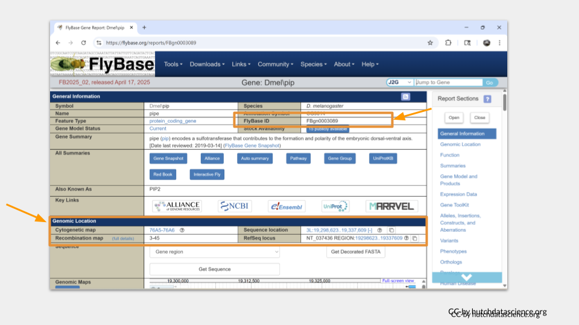
You can scroll down the page or click the menu on the right-hand side to move to additional sections. The next section we’re interested in is the function section. Here, we can see what the general molecular function of the gene is, what sorts of biological processes the gene product (the protein) is involved in, and where the protein is found in the cell, or the cellular component. In the case of pipe, we can see that it’s an enzyme involved in development, gene expression, protein metabolism. We also see that the pipe protein is found in the membrane and endomembrane system, as well as in the nucleus around the chromosomes.
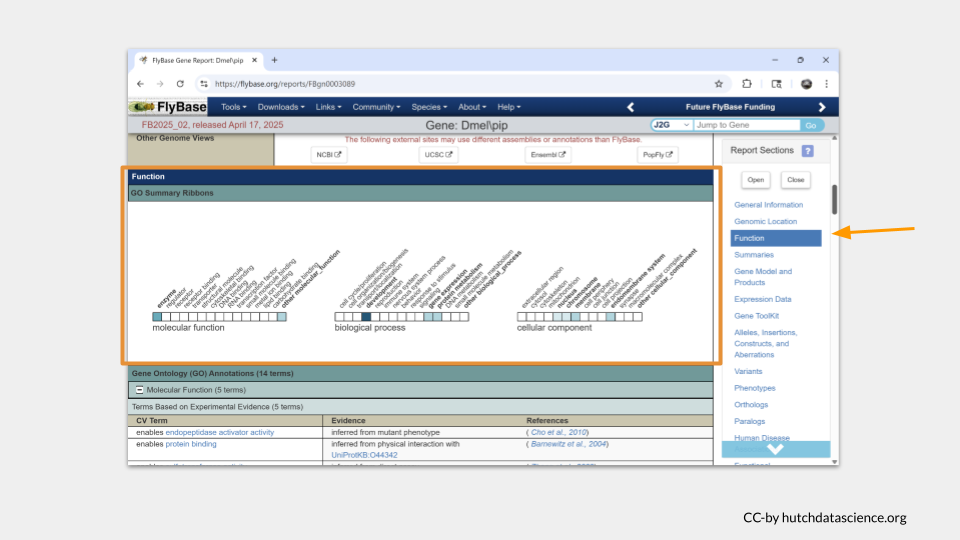
Scrolling down further takes us to a section with more details about the gene function. You may need to click on the small plus sign to view the details (or click on the minus sign to hide the details). In the case of pipe, it appears to code for an enzyme that is enables endopeptidase activator activity and protein binding.
Now it’s your turn to look up your four genes in FlyBase.
TASK ONE
For each gene (scarlet, plum, mustard, and white), find the following information:
- FlyBase gene ID
- chromosomal location
- molecular function
- the biological processes the gene product is involved in
- where in the cell the gene product can be found
Part 2
Next, let’s explore additional genomic databases beyond FlyBase to characterize the homologs to the four Drosophila genes.
A homolog is a gene or protein that is similar to another due to having a common evolutionary origin. Many genes in Drosophila have homologs in the human genome, as well as in the genomes of common model organisms like mice and zebrafish.
First, we need to find out what the name of the homologous genes are. The gene IDs and common names differ between species. If we keep scrolling down the page on the pipe gene in FlyBase, we can find what those homologous genes are called in our species of interest.
It turns out that the human gene most likely to be a homolog of pipe is called UST.
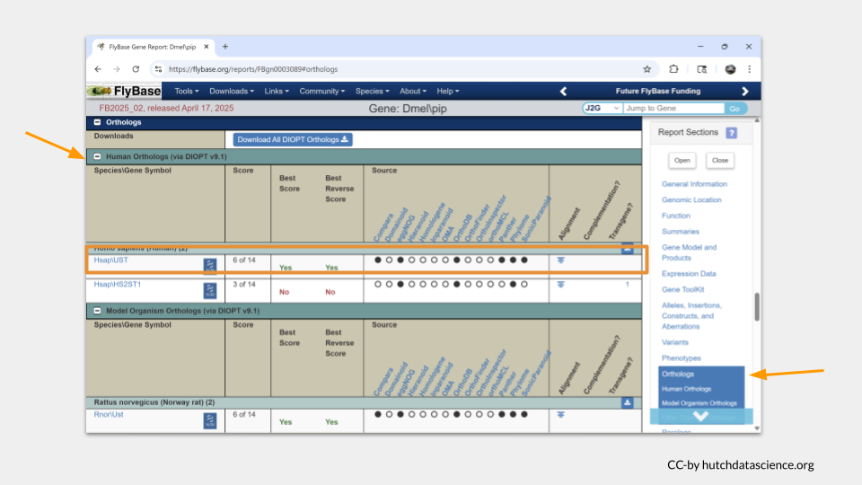
If we scroll down a little farther, we see that the most likely homologous mouse (Mus musculus) is called Ust. In the zebrafish (Danio rerio), it is probably usta.
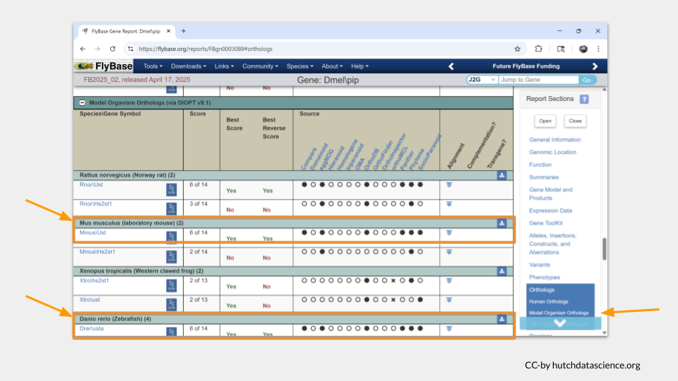
To find out more information about these homologs, we’re going to need to look at additional species-specific databases. Let’s start with the mouse.
The Mouse Genome Informatics database is the international database for the laboratory mouse, integrating genetic, genomic, and biological data as part of an effort to use the mouse to study human health and disease. It is maintained by the Jackson Laboratory.
Open the MGI database and search for the name of the mouse homolog, Ust.
TODO: add MGI slides
In order to look up information about the zebrafish homolog, we need to switch databases again.
The ZFIN (Zebrafish Information Network is the database of genetic and genomic data for the zebrafish as a model organism. It was formed by a group of zebrafish researchers at Cold Spring Harbor and is maintained by the ZFIN Database Team at the University of Oregon.
Open ZFIN and search for the zebrafish homolog, usta.
TODO: add ZFIN slides
Finally, we can turn to the human homolog, UST. There are several databases with information about human genes. NCBI maintains a database of genetic, genomic, and expression data for a variety of taxa, including humans. This database is maintained and funded through the National Library of Medicine at the NIH.
Open the NCBI gene page and search for the human homolog UST.
TODO: add NCBI slides
Now it’s your turn to look up information about the homologs of your four Drosophila genes.
TASK TWO
For each of the Drosophila genes (scarlet, plum, mustard, and white), find the following information for the mouse, zebrafish, and human homologs:
- name
- chromosomal location
- molecular function
- the biological processes the gene product is involved in
- where in the cell the gene product can be found
Does this information differ among the homologs? For example, do the homologs of scarlet do the same things as scarlet?
Part 3
In addition to the experimental data you’re sorting through, you notice that someone has collected literature on different human diseases. You assume these diseases are thought to be caused in part by some of the human homologs of the genes your lab is studying, so you decide to look up the information using a pair of human disease databases.
OMIM, short for Online Mendelian Inheritance in Man, is a comprehensive database of human genes and genetic phenotypes. It is maintained by the McKusick-Nathans Institute of Genetic Medicine at Johns Hopkins University.
MalaCards is a searchable database offering information on human diseases, medical conditions, and disorders. It is maintained as a joint effort between the Weizmann Institute of Science and LifeMap Sciences.
Both databases will give you the information you need. We’ll go through how to use both, but you only need to use one for this activity.
Let’s start with OMIM. Click on the link or type “https://omim.org” into your browser. On the landing page, you can type either a disease or a gene name into the search bar. (Just remember to use the human gene name or gene ID!)
Earlier, we discovered the human homolog of pipe is UST. Let’s look this gene up and see what (if any) diseases it might be associated with.
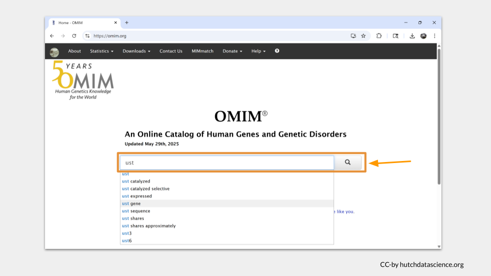
Our search pulls up a list of entries associated with our search term. For UST, there’s only one. Click on it.
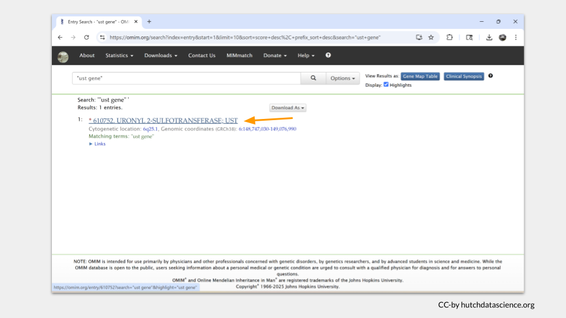
Each entry in OMIM will have a table of contents on the left hand side of the page. In the case of UST, there’s not much there. In fact, there doesn’t seem to be any subsection focusing on disease state or phenotype.
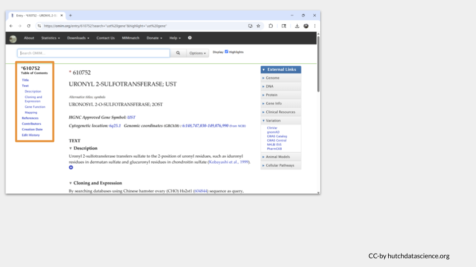
As a comparison, we can search for the known disease risk gene BRCA1, which is associated with an increased risk of breast and ovarian cancer. When we look at the top OMIM hit for BRCA1, we can see a section in the table of contents called “Gene-Phenotype Relationships”. This is the section where OMIM displays any possible disease phenotype associated with the gene.
Since we don’t see this section for UST, we can conclude that UST doesn’t appear to cause any human diseases that we know of at this time.
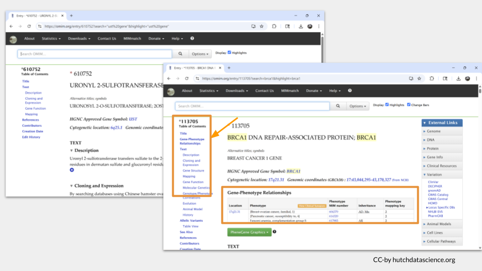
You can find similar information on the MalaCards website. Click the link or type “https://www.malacards.org” into your browser to open the webpage. Then type UST into the bottom search bar. (Although you can look up genes on MalaCards, most of the time you look up a a disease to find out what genes are associated with it instead of the other way around.)
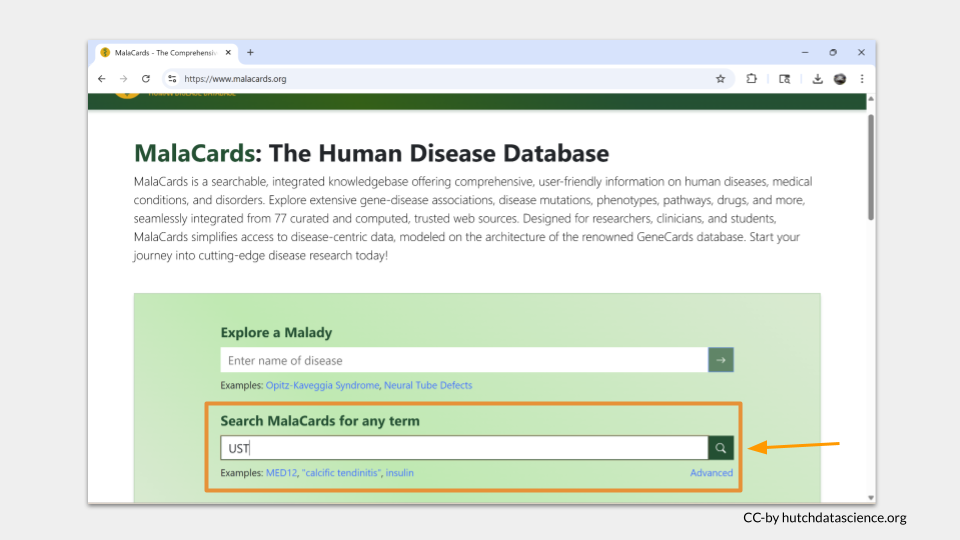
Since we used the “search any term” search bar, MalaCards will look for the term “UST” on all the disease pages in the database. The results are ordered with the best-matching page on top. Click “Crohn’s Disease” to see why “UST” matched this entry.
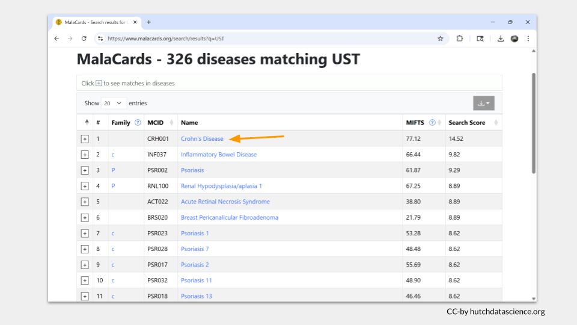
One nice thing about MalaCards is that the search term is highlighted in yellow when you open the page. In this case, we can see that “UST” actually matched part of drug that was investigated as a treatment for Crohn’s disease. This suggests that the gene UST is not found in any of the MalaCards disease entry.
Let’s search MalaCards with the term BRCA1 to see what it looks like when the gene name is found in an entry. In the top hit entry (“Hereditary Breast Ovarian Cancer Syndrome), we can see the actual gene name BRCA1 shows up in the overview, as well as in the section about associated genes and the alternate name for the disease.
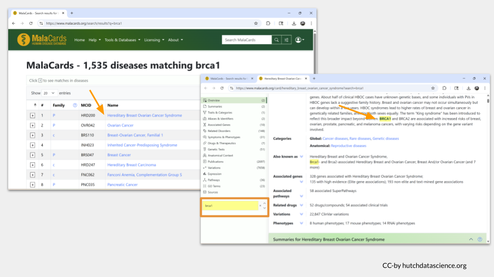
Now it’s your turn to look up information the diseases (is any) your four human homologs might be associated with.
TASK THREE
What human disease or disorder (if any) are the homologs of scarlet, plum, mustard, and white associated with?
Part 4
Finally, it’s time for you to report back to your supervisor. Here’s what you know about the experiments:
TODO: Add experiment information, as well as what diseases were being researched in the literature.
Experiment 1
Experiment 2
Experiment 3
Experiment 4
Note
Which Drosophila genes are associated with each experiment?
Which background research on human disease belongs with each experiment?